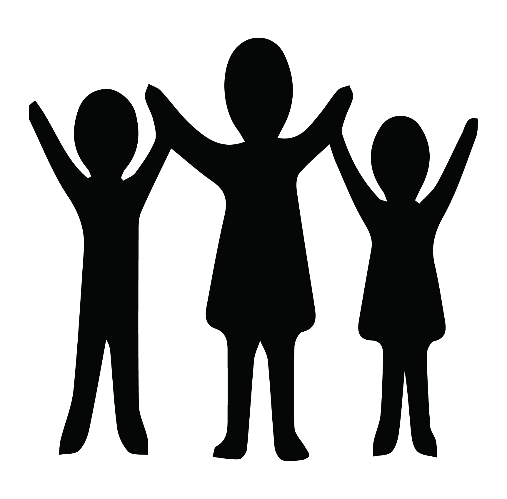
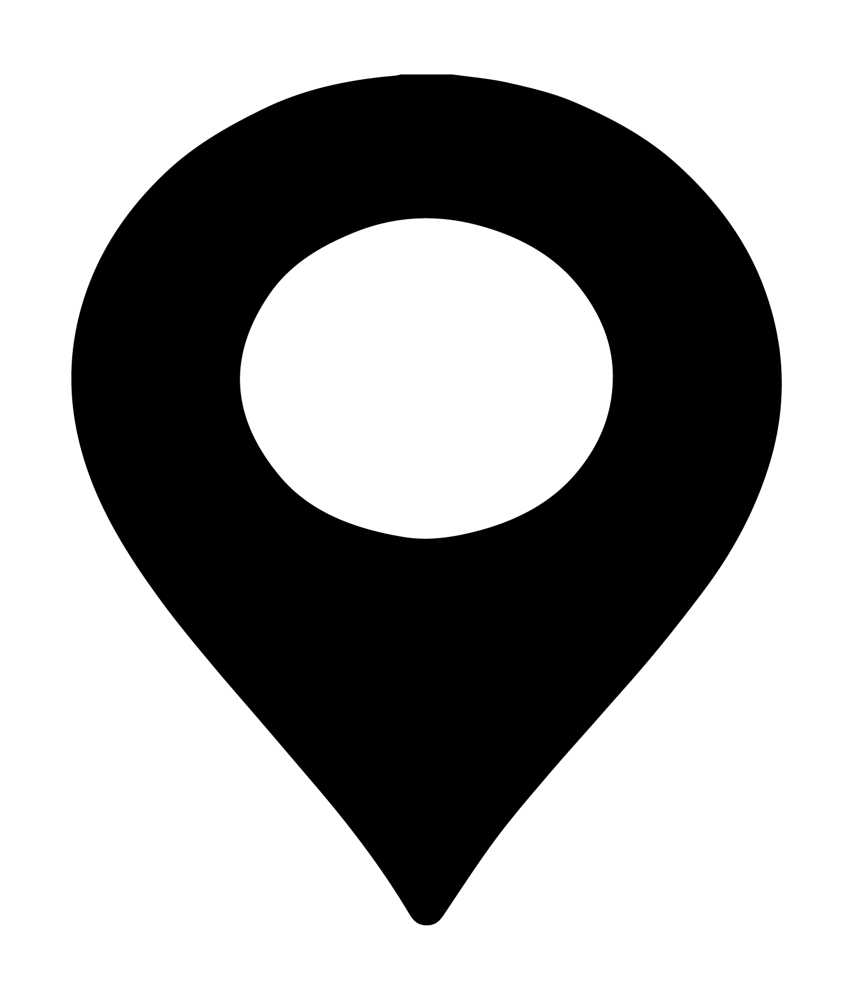
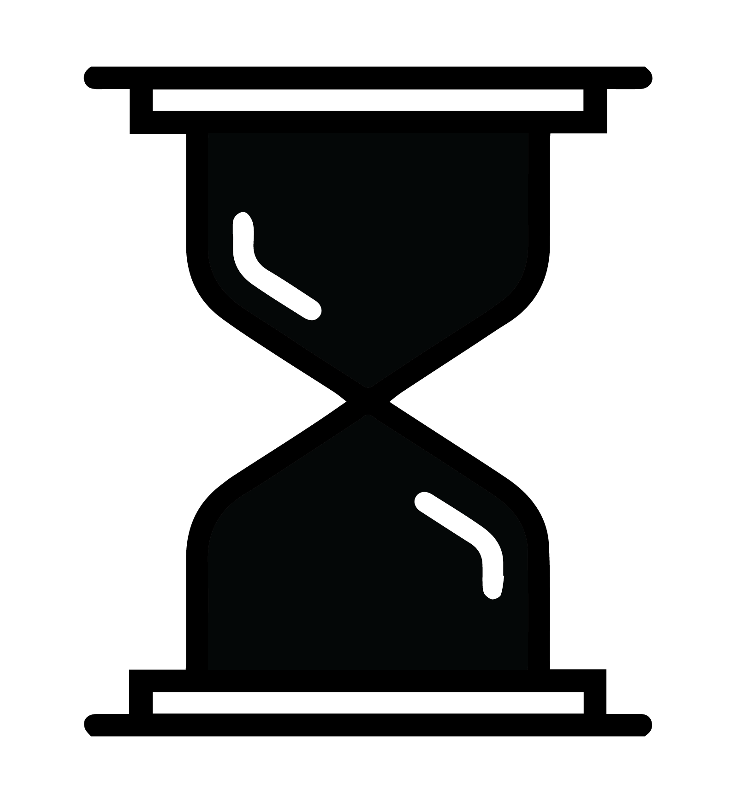

סוג פעילות:
יצירה
סוג פעילות:
יצירה
 גילאים: יסודי וחטיבה
 מרחב פעילות: סגור
 משך פעילות: עד 20 דקות
מטרות הפעילות:
- הפעילות תוביל לחשיבה אישית על הדברים שחשובים לכל אחד מהמשתתפים בחיים
- המשתתפים יביעו את המשאלות שלהם, בדרך לא וורבאלית
- המשתתפים יכירו את הביטוי אוזניים לכותל
- המשתתפים יקיימו שייח סביב המושג משאלה\תפילה
- המשתתפים יכירו נקודת ציון משמעותית בישראל
הכנה לפעילות:
עזרים:
- פלאקט גדול או קאפה
- צבעים וטושים
- פתקיות
- מספריים/סכין חיתוך
הכנה מראש:
- התאמה תרבותית- במידה והקבוצה מכילה משתתפים ממגזרים שונים ניתן לוותר על ההתייחסות לכותל, ולייצג אותו כ"קיר משאלות", "באר משאלות" וכו..
- נכין פלאקט/ קאפה מחולקים למספר מרובעים (בצורה של חומה) בפינות המחברות בין הריבועים נחתוך בעזרת סכין חיתוך/ מספרים חורים צרים (מספיק גדולים כדי להכני בהם פתק).
מהלך הפעילות:
את המשחק ניתן לעשות באמצעות מדבקות או כרטיסיות ריקות. ההוראות יכתבו על מדבקות אך הן תקפות גם לכרטיסיות- 2 מדבקות מייצגות כרטיסיה אחת.
נחלק לכל משתתף שתי מדבקות.
ננחה את המשתתפים לרשום על כל אחת מהמדבקות משהו שקשור לנושא שבחרנו מראש. לדוגמא: אם הנושא הוא מאכלים אהובים, על כל אחת מהמדבקות ירשום המשתתף שם של מאכל שהוא אוהב.
שלב ראשון:
נשאל את הפעילים מה הם חושבים שציירנו... ונצפה לתשובה קיר/ חומה.
נסביר שלקיר הזה עדין חסר צבע והמשימה הראשונה שלנו היא להוסיף לו צבע.
שלב שני:
נסביר שהקיר מדמה את הכותל המערבי, ושאחד המאפיינים של הכותל הוא שאנשים באים אליו לבקש משאלות.
נחלק לכל משתתף פתק נייר.
נבקש מהמשתתפים לכתוב/ לצייר על הפתק שלהם משאלה. מי שמסיים מוזמן חבוא ולשים באחד החריצים של הכותל את הפתק.
דגשים לנגישות:
מוגבלות מוטורית
- במידה ויש פעילים עם כיסאות גלגלים או הליכונים, יש לוודא כי הפעילות מתנהלת על שולחן ועם אפשרות לכיסאות מסביבו.
- אם יש חניכים המתקשים לצייר עם הידיים אך מורגלים לשימוש בכפות הרגליים, ניתן להניח את משטח העבודה על הרצפה ולאפשר להם לצייר עם הרגליים.
- אם השיתוק הוא בפלג גוף עליון ותחתון, ניתן להיעזר בפה, או לחבר את הטוש עם גומיה לייד ולצייר בתנועות רחבות בסיוע של אדם נוסף.
לקות חושית
ללקויי ראיה, ניתן לייצר את הקווים של הכיר מפלסטלינה ולתת להם למרוח פלסטלינה על הקאפה במקום צבעים.
מוגבלות קוגניטיבית
יש להתאים את רמת השייח לרמה הקוגנטיבית והגיל של המשתתפים. במידה והרמה נמוכה נעשה אנלוגיה בין המילה "משאלה" למילה "חלום" או "תפילה" שנמצאת בשימוש יותר יום יומי.
מוגבלות תקשורתית
במידה וחניכים מתקשים להגיד או לרשום את החלום שלהם ניתן לביא תמונות או מילים מייצגות של משאלות שונות ולתת לם לבחור מתוך התמונות ואותם לשים כפתק בקיר.